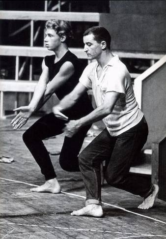
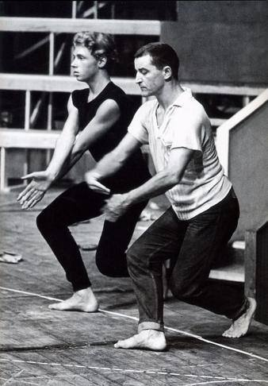
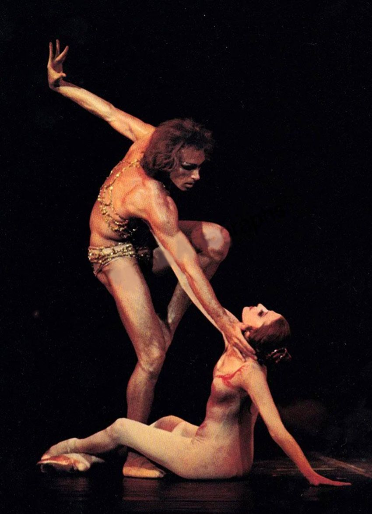
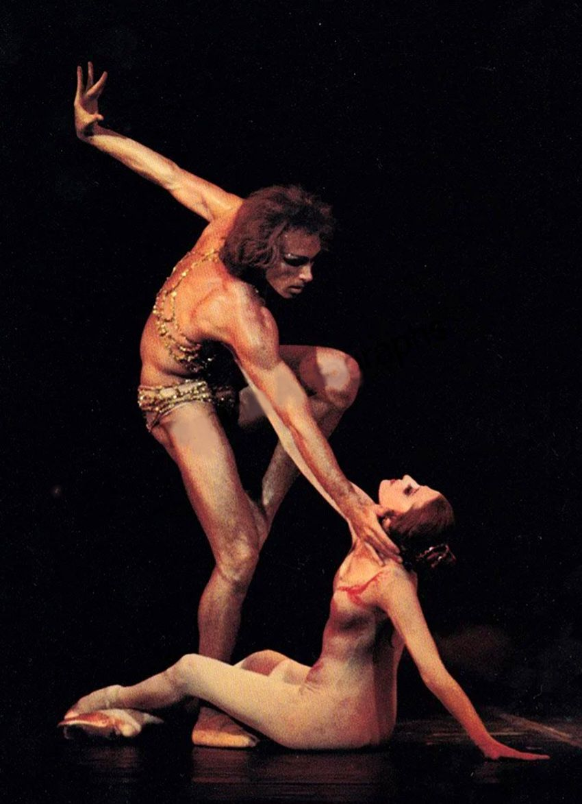

El bailarín que fusionó el arte argentino con el mundo
Jorge Donn fue uno de los bailarines más carismáticos del siglo XX. Nació en Buenos Aires en 1947 y desde joven mostró una conexión única con la danza.
A los 16 años viajó a Bruselas para unirse a la compañía de Maurice Béjart, fundador del Ballet du XXe Siècle. Allí se convirtió en su protegido y figura central, destacando por su fuerza escénica, expresividad y talento único.
Su primer papel protagónico fue en Romeo y Julieta (1966), junto a Hitomi Asakawa. La crítica lo llamó el "dúo más hermoso jamás creado por Béjart". Poco después brilló en Misa para un tiempo presente y luego en Nijinsky, Clown de Dios (1971), interpretando al mítico bailarín ruso sumido en la locura.
En 1979 aceptó un desafío inusual: bailar Bolero de Ravel, una pieza tradicionalmente femenina. Su interpretación fue descrita como "mística, sagrada y sublime", transformando la obra en algo completamente nuevo.
La película Los unos y los otros (1980) lo lanzó a la fama mundial. Regresó a Argentina en 1982 con el Bolero, siendo recibido como un ídolo popular.
Falleció trágicamente en noviembre de 1992, pero su legado sigue vivo en cada proyección que realizamos el primer sábado de cada mes. Su arte continúa inspirándonos.
El legado de Jorge Donn trasciende el escenario:
Jorge Donn tuvo una carrera extensa y global. Actuó en numerosos países de **cuatro continentes**, consolidándose como un ídolo en Japón, Brasil, México y toda Europa.
Principales destinos de su carrera:
Imágenes exclusivas de su vida y carrera artística
 

 

¿Quieres saber más sobre Jorge Donn? Únete a nuestras redes sociales: